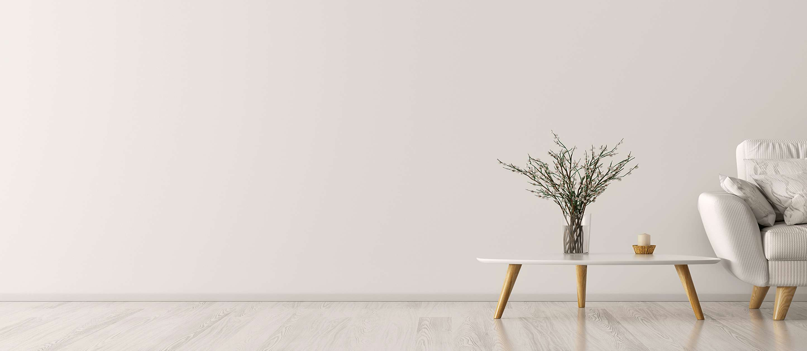

The Art of Minimalism: Living a Simpler, More Fulfilling Life
In a world filled with distractions and constant stimulation, embracing minimalism offers a path to a
simpler, more fulfilling life. Minimalism is not just about decluttering physical possessions; it's a
mindset that prioritizes what truly matters and eliminates excess to make room for what brings joy and
purpose. In this blog post, we will explore the art of minimalism and how it can help us lead more
intentional and fulfilling lives.
At its core, minimalism is about focusing on what adds value and letting go of the unnecessary. By
decluttering our physical spaces, we create an environment that promotes clarity, calmness, and
productivity. Minimalism encourages us to assess our belongings and keep only what serves a purpose or
brings us joy. This intentional approach to possessions helps us break free from the consumerist cycle,
reduce waste, and live more sustainably.
Beyond physical decluttering, minimalism extends to other aspects of our lives. It invites us to
simplify our commitments, relationships, and even digital lives. By eliminating the non-essential, we
create space for what truly matters: quality time with loved ones, pursuing meaningful goals, and
engaging in activities that bring us fulfillment. Minimalism encourages us to prioritize experiences
over material possessions and cultivate a deeper sense of gratitude and contentment.
Living a minimalist lifestyle also offers numerous mental and emotional benefits. With fewer
distractions and less clutter, we can focus our energy and attention on what truly matters, leading to
increased clarity, creativity, and productivity. Minimalism can help reduce stress and overwhelm, as we
no longer feel the constant pressure to acquire more and keep up with societal expectations. By
embracing simplicity, we gain a greater sense of freedom and autonomy over our lives.
Embracing minimalism is not a one-size-fits-all approach. It's a personal journey of self-discovery and
intentional living. To embark on this path, start by reflecting on your values and priorities. What
truly brings you joy and fulfillment? From there, gradually declutter your physical space, letting go of
items that no longer serve you. Simplify your commitments by learning to say no to activities that don't
align with your values or bring you joy.
As you embrace minimalism, be mindful of the process and allow yourself to adapt along the way. It's not
about perfection or achieving a certain aesthetic; it's about finding what works best for you and
creating a life that aligns with your values. Surround yourself with supportive communities and
resources that inspire and guide you on your minimalist journey.
In conclusion, the art of minimalism invites us to live with intention and purpose. By simplifying our
physical spaces, commitments, and relationships, we can create a more fulfilling and meaningful life.
Embracing minimalism allows us to break free from the excess and focus on what truly matters,
cultivating gratitude, contentment, and a deeper connection to ourselves and the world around us.